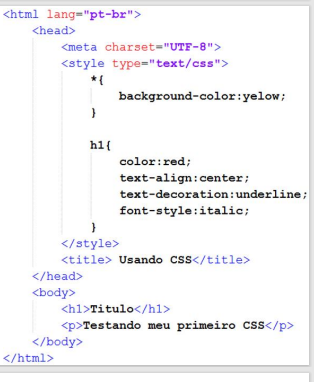
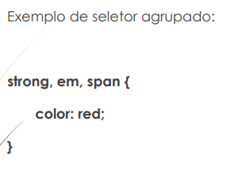

A propriedade é a característica que você deseja modificar no elemento. O valor é o valor referente a esta característica. Se você quer modificar a cor do texto, o valor é um Hexadecimal, RGBA ou até mesmo o nome da cor por extenso. Até aqui, nada diferente. Muitas vezes você não precisa aprender do que se trata a propriedade, basta saber que existe e se quiser decorar, decore. Propriedades são criadas todos os dias e não é um ato de heroísmo você saber todas as propriedades do CSS e seus respectivos valores
| Os seletores são a alma do CSS e você precisa dominá-los. É com os seletores que você irá escolher um determinado elemento dentro todos os outros elementos do site para formatá-lo. O seletor representa uma estrutura. Essa estrutura é usada como uma condição para determinar quais elementos de um grupo de elementos serão formatados |  |
Seletores Encadeados e Agrupados Seletores encadeados e seletores agrupados são a base do CSS. Você os aprende por osmose durante o dia a dia. Para você lembrar o que são seletores encadeados e agrupados segue um exemplo abaixo: Exemplo de seletor encadeado

Este seletor formata o link (a), que está dentro de um strong, que está dentro de P e que por sua vez está dentro de um DIV
Você agrupa elementos separados por vírgula para que herdem a mesma formatação.